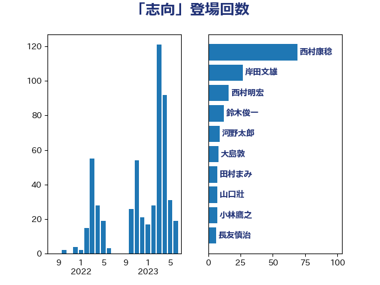

単語「志向」

| 菅義偉 | 自由民主党 | 24 回 |
| 茂木敏充 | 自由民主党 | 19 回 |
| 井上信治 | 自由民主党 | 18 回 |
| 加藤勝信 | 自由民主党 | 9 回 |
| 大島敦 | 立憲民主党 | 7 回 |
| 小泉進次郎 | 自由民主党 | 7 回 |
| 山口壯 | 自由民主党 | 7 回 |
| 小林鷹之 | 自由民主党 | 6 回 |
| 岸田文雄 | 自由民主党 | 6 回 |
| 若宮健嗣 | 自由民主党 | 6 回 |
| 萩生田光一 | 自由民主党 | 5 回 |
| 麻生太郎 | 自由民主党 | 5 回 |
| 太栄志 | 立憲民主党 | 4 回 |
| 柳ヶ瀬裕文 | 日本維新の会 | 4 回 |
| 上川陽子 | 自由民主党 | 3 回 |
| 吉川沙織 | 立憲民主党 | 3 回 |
| 安江伸夫 | 公明党 | 3 回 |
| 田村まみ | 国民民主党 | 3 回 |
| 若松謙維 | 公明党 | 3 回 |
| 鈴木俊一 | 自由民主党 | 3 回 |
| 長友慎治 | 国民民主党 | 3 回 |
| 中野洋昌 | 公明党 | 2 回 |
| 伴野豊 | 立憲民主党 | 2 回 |
| 住吉寛紀 | 日本維新の会 | 2 回 |
| 務台俊介 | 自由民主党 | 2 回 |
| 勝部賢志 | 立憲民主党 | 2 回 |
| 堀内詔子 | 自由民主党 | 2 回 |
| 小田原潔 | 自由民主党 | 2 回 |
| 山際大志郎 | 自由民主党 | 2 回 |
| 川田龍平 | 立憲民主党 | 2 回 |
| 平井卓也 | 自由民主党 | 2 回 |
| 平木大作 | 公明党 | 2 回 |
| 後藤茂之 | 自由民主党 | 2 回 |
| 打越さく良 | 立憲民主党 | 2 回 |
| 松野博一 | 自由民主党 | 2 回 |
| 清水真人 | 自由民主党 | 2 回 |
| 穀田恵二 | 日本共産党 | 2 回 |
| 赤羽一嘉 | 公明党 | 2 回 |
| 階猛 | 立憲民主党 | 2 回 |
| 音喜多駿 | 日本維新の会 | 2 回 |
| 高階恵美子 | 自由民主党 | 2 回 |
| 三浦信祐 | 公明党 | 1 回 |
| 上田清司 | 国民民主党 | 1 回 |
| 中川郁子 | 自由民主党 | 1 回 |
| 中根一幸 | 自由民主党 | 1 回 |
| 井上哲士 | 日本共産党 | 1 回 |
| 加藤鮎子 | 自由民主党 | 1 回 |
| 國重徹 | 公明党 | 1 回 |
| 城井崇 | 立憲民主党 | 1 回 |
| 宮崎政久 | 自由民主党 | 1 回 |
| 小沼巧 | 立憲民主党 | 1 回 |
| 小西洋之 | 立憲民主党 | 1 回 |
| 山口晋 | 自由民主党 | 1 回 |
| 山田宏 | 自由民主党 | 1 回 |
| 掘井健智 | 日本維新の会 | 1 回 |
| 末松信介 | 自由民主党 | 1 回 |
| 末次精一 | 立憲民主党 | 1 回 |
| 杉尾秀哉 | 立憲民主党 | 1 回 |
| 松沢成文 | 日本維新の会 | 1 回 |
| 森まさこ | 自由民主党 | 1 回 |
| 武見敬三 | 自由民主党 | 1 回 |
| 渡辺猛之 | 自由民主党 | 1 回 |
| 熊谷裕人 | 立憲民主党 | 1 回 |
| 熊野正士 | 公明党 | 1 回 |
| 片山さつき | 自由民主党 | 1 回 |
| 猪口邦子 | 自由民主党 | 1 回 |
| 田村憲久 | 自由民主党 | 1 回 |
| 石川博崇 | 公明党 | 1 回 |
| 石川香織 | 立憲民主党 | 1 回 |
| 磯崎仁彦 | 自由民主党 | 1 回 |
| 篠原豪 | 立憲民主党 | 1 回 |
| 菊田真紀子 | 立憲民主党 | 1 回 |
| 藤田文武 | 日本維新の会 | 1 回 |
| 赤木正幸 | 日本維新の会 | 1 回 |
| 赤池誠章 | 自由民主党 | 1 回 |
| 赤澤亮正 | 自由民主党 | 1 回 |
| 逢沢一郎 | 自由民主党 | 1 回 |
| 進藤金日子 | 自由民主党 | 1 回 |
| 重徳和彦 | 立憲民主党 | 1 回 |
| 長峯誠 | 自由民主党 | 1 回 |
| 青柳仁士 | 日本維新の会 | 1 回 |
| 須藤元気 | 無所属 | 1 回 |
| 高橋はるみ | 自由民主党 | 1 回 |
| 高橋光男 | 公明党 | 1 回 |